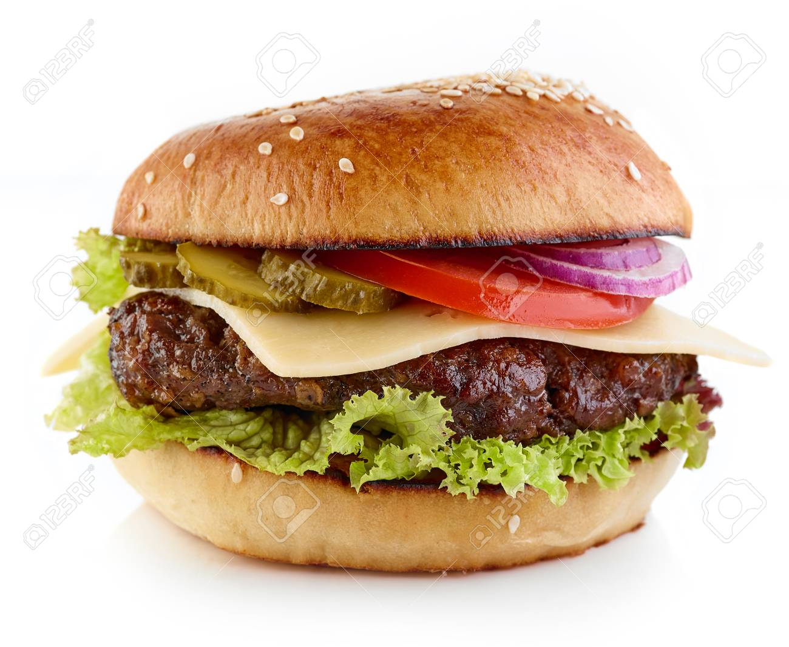
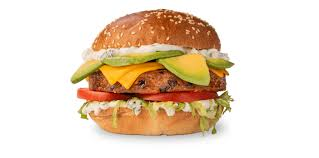

La hamburguesa, tal como la conocemos hoy, tiene una historia rica y compleja. Su origen se remonta a la antigua Hamburgo, Alemania, donde la carne picada y condimentada era un alimento popular. Sin embargo, la transformación de esta carne en el sándwich que conocemos hoy en día ocurrió en los Estados Unidos a finales del siglo XIX y principios del siglo XX.
La primera mención de una hamburguesa en un menú de restaurante en los Estados Unidos fue en 1834 en el Delmonico's en Nueva York, aunque no era exactamente lo que conocemos como una hamburguesa moderna. La popularidad de la hamburguesa aumentó durante la Exposición Universal de 1904 en St. Louis, donde se sirvió una versión moderna del sándwich.
Con el tiempo, la hamburguesa se convirtió en un símbolo de la comida rápida estadounidense, especialmente con la aparición de cadenas como White Castle en 1921 y McDonald's en 1948. Hoy en día, la hamburguesa es un alimento universal con innumerables variantes en todo el mundo.


Historia del Hotdog
El hotdog, también conocido como perro caliente, es otro alimento icónico con una historia fascinante. Se cree que los primeros hotdogs fueron creados por carniceros alemanes en el siglo XIX, quienes llevaban su tradición de embutidos a los Estados Unidos.
Uno de los primeros lugares donde se vendieron hotdogs fue en Coney Island, Nueva York, a finales del siglo XIX. Charles Feltman, un inmigrante alemán, comenzó a vender salchichas en un pan a lo largo de la playa en 1867. Esta práctica ganó popularidad rápidamente y otros vendedores comenzaron a ofrecer versiones similares.
El hotdog ganó aún más popularidad durante la Exposición Mundial de 1893 en Chicago, donde se sirvieron miles de hotdogs a los asistentes. Durante el siglo XX, el hotdog se convirtió en un alimento básico en eventos deportivos y ferias en todo Estados Unidos. Hoy en día, los hotdogs se disfrutan en muchas partes del mundo y vienen en una variedad de estilos y con diferentes aderezos.